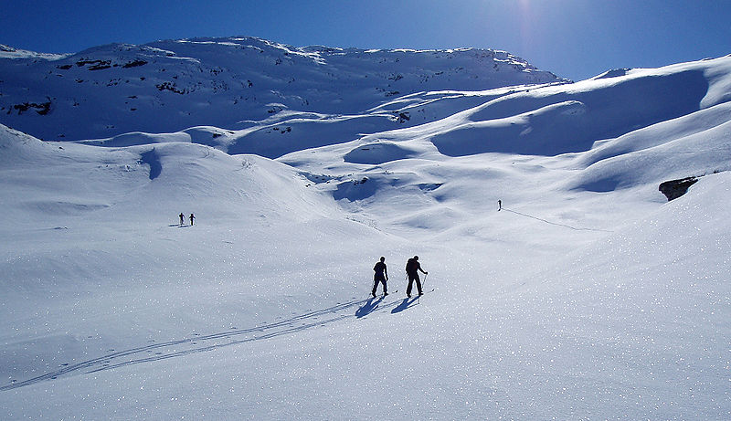

Cross-country skiing is a form of skiing where skiers rely on their own locomotion to move across snow-covered terrain, rather than using ski lifts or other forms of assistance. Cross-country skiing is widely practised as a sport and recreational activity; however, some still use it as a means of transportation. Variants of cross-country skiing are adapted to a range of terrain which spans unimproved, sometimes mountainous terrain to groomed courses that are specifically designed for the sport.
Modern cross-country skiing is similar to the original form of skiing, from which all skiing disciplines evolved, including alpine skiing, ski jumping and Telemark skiing. Skiers propel themselves either by striding forward (classic style) or side-to-side in a skating motion (skate skiing), aided by arms pushing on ski poles against the snow. It is practised in regions with snow-covered landscapes, including Northern Europe, Canada, Russia and regions in the United States. Competitive cross-country skiing is one of the Nordic skiing sports. Cross-country skiing and rifle marksmanship are the two components of biathlon, ski-orienteering is a form of cross-country skiing, which includes map navigation along snow trails and tracks.
